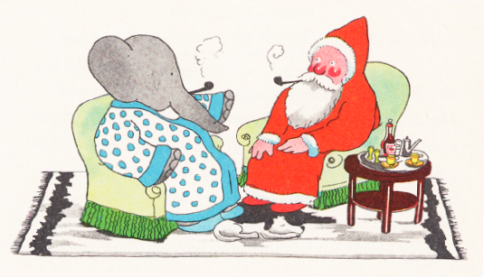
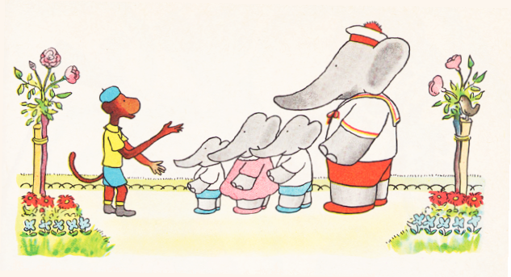
「なあ、 みんな！」
あるひ こざるの ゼフィルが、 アルチュール、 ポム、 フロール、 アレクサンドルに よびかけます。
「きいてくれ、 さっき すげえ はなしを みみに したんだ。 にんげんの うちには、 まいとし クリスマスイヴの よるに すっげえ やさしい おじさん、 それも もじゃもじゃ しろひげで あかいふくに とんがりぼうしの やつが、 そらを とんでくるらしいぜ。 どっさり おもちゃを はこんできて、 そいつを こどもに くれるんだとさ。 そいつ サンタの おじさんって いうんだってな。 なかなか すがたが おがめないみたいで、 こっちが ねむってるあいだに えんとつから しのびこむとか。 あくるあさ くつしたのなかに おもちゃが あるってんで こどもたちも きたんだなって わかるらしい。 どうだ、 おれたちも そいつに ひとつ てがみを かいてみないか。 ぞうの くに、 おれらんとこにも きてくれってさ。」
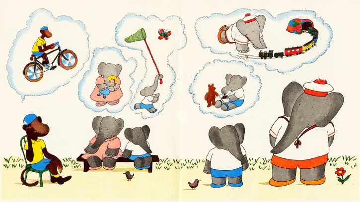
アレクサンドルが いいます。「いいね、 やろう やろう！」
「でも おてがみ なんて かけばいいかな？」と いうのは アルチュール。 そこで ポムが ひとこと。
「そりゃ サンタに かくとなれば ぼくたちの ほしいものじゃ ないの。」
「じゃあ じっくり かんがえて かかなきゃ。」
さいごに フロールが そう いうと、 みんなは くちを つぐんで しばらく かんがえごと。
ゼフィルが まっさきに おもいつくのは やっぱり じてんしゃ。 フロールが もらえて うれしいのは おにんぎょうさんで、 アレクサンドルは むしとりあみが ほしいし、 ポムは ふくろいっぱいの あめと くまの ぬいぐるみ。 アルチュールと きたら てつどうもけいを ゆめみる しまつ。
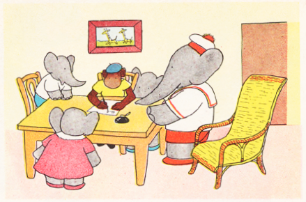
それぞれ ほしいものも きまると、 いちばん じの うまい ゼフィルが ふでを とることに なりまして。 みんな それを そばで まじまじ。 アルチュールが わすれず ふうとうに きってを はりまして。 そして ひとりずつ じぶんの なまえを かきおわると、 うきうきと ぜんいんで てがみを ポストへ いれにいきます。
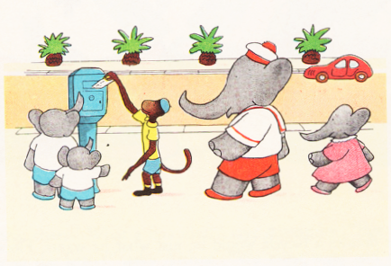
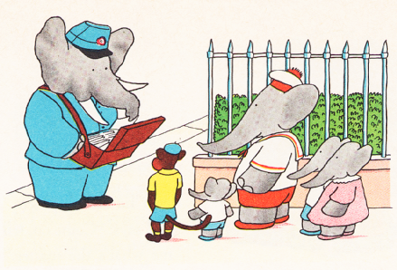
それからというもの ５にんは あさに なるたび ゆうびんやさんが くるのを まちかまえまして。 かげが みえると いそいで むかえにゆくのですが、 ああ ゆうびんやさんが いつも どれだけ さがしても サンタさんからの へんじは きていません。 あるひ ババールが そんな こどもたちに きづきまして。
「おや どうして こどもたちが。 おもてで すっかり しょげている。」
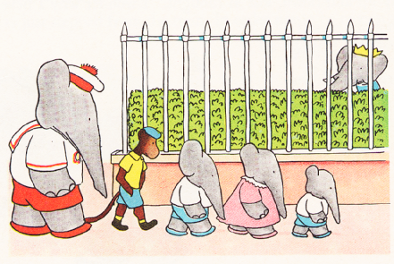
すぐさま ババールは こえを かけます。
「ふむ、 こどもたち これは なにごとかね？」
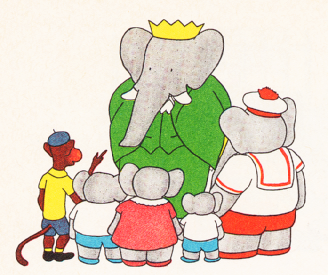
ゼフィルは てがみのことを うちあけます。 すると ババールは このように いいまして。
「なに、 おへんじが ないのだろ？ きってを はるの わすれたんじゃないか。」
「ううん、 それは ちゃんと アルチュールが。」
「となると、 サンタの おじさんは なかなか おへんじの じかんが とれないのさ。 まあ きばらしに あそんでなさい。 おかげで もっと いいことを おもいついたかもしれん。」
パイプを ふかせながら さんぽする ババール。 いったりきたり あるきながら おもうのです。
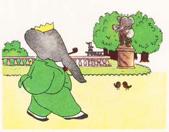
「どうして もっと はやく きがつかなかった！ こっちから サンタさんに たのみにいけば いいのだ。 ぞうの くにへ きてくれって。 こうなると いまから さがしにでるのが いちばん いいな。 じかに はなしを すれば むこうも むげには ことわるまい。」
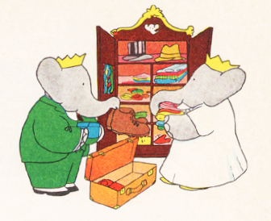
こころを きめた ババールは、 あわてて にづくりの おてつだいに セレストを よびまして。 おともしたいと いう セレストに、 ババールは さとします。 じぶんの るすのあいだ くにを まかせられるのは おまえだけだと、 それに むこうも しらない やつらが いちどに おおぜいで やってきたら やっぱり あいたがらないのでは ないかと。
すんなりと たびは すすみ、 ヨーロッパに ついた ババールは れっしゃを おりまして。 おしのびなので かんむりは かぶっていません。
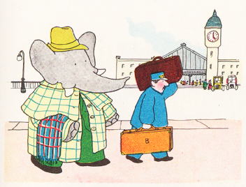
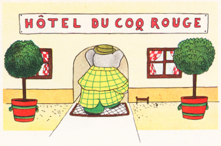
ババールが あんないされたのは こぢんまりとした むかしながらの ホテル。 あてがられた へやも なかなかのもので。 うわぎと ぼうしを ぬいで、 さっそく からだを きれいにします。 ここで ちゃんとしておけば やっぱり すっきりしますからね。 とはいえ からだを ふきながら きになることも ありまして。
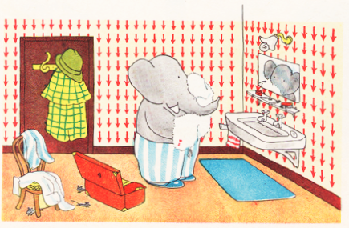
「それにしても かすかに きこえる このおと、 いったい なんなんだ？」
てを とめて、 ぐるりと あたりを みまわしますと、 ふいに めに とびこんできたのが なんと ３びきの こねずみ。 そのうち １ぴきが おじけづくことも なく こちらに はなしかけてきまして。
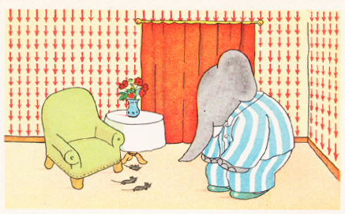
「どうも こんにちは、 おおきな おかた。 あの、 ここへは ながく おとまりですか？」
おじけづくことも なく はなしかけてきたので、 ババールも へんじを します。
「いや、 まだ たびの とちゅうで。 ちょっと サンタの おじさんを さがしにな。」
「あなたさまは サンタさんを おさがしでしたか。 そのかたなら ここ、 このたてものに おりますよ。 よおく ぞんじております。」
そして こねずみたちは こう いうのです。
「そのかたの おへやへ ごあんないしましょう。」
「ありがたい！ ありがたい！ ねがっても ないことだ！ いま へやぎを はおるから、 きみらに ついてゆくよ。」
ババールも びっくりして おおごえです。
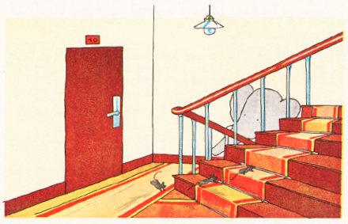
「しかし いったい どこへ つれていこうと いうのだ、 この こねずみたちは。」
かいだんの とちゅうで たちどまって いきつぎしながら ババールは ふしぎに おもいます。
「サンタの おじさんは、 どうも このたてものの てっぺんの へやに すんでるようだ。 すてきな ながめと ひろい おへやが おきにいりと いうわけか。」
あれこれ ババールが かんがえているうち、 ３びきの こねずみは やねうらに たどりつき、 その すみのあたりで なにやら ちょろちょろ うごきはじめます。
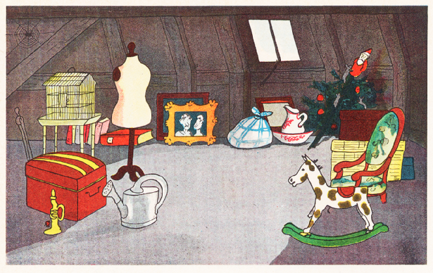
「いったい どこへ いった？」
ババールが こえを かけると、 ３びきの こねずみも へんじを しまして。
「こっちです、 はやく この やねうらへ。 サンタさんを ただいま とりはずしますから。」
ババールが おいつくと、 ３びきの こねずみは そろって ほこらしげで。
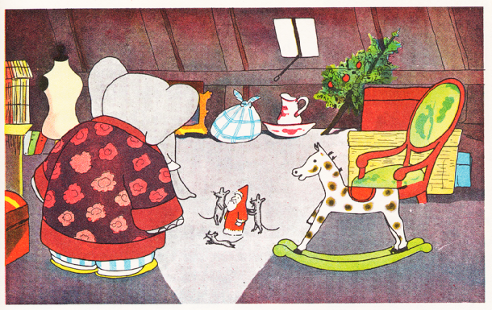
「こちらが サンタの おじさんです。 ここで ねんがらじゅう じっと しているのです。 クリスマスイヴの ひにだけ にんげんは さがしにきて、 そのとしの きの てっぺんに かざるのです。 クリスマスが おわると もとの やねうらに もどされるので、 わたくしどもも あのかたと あそべるというわけで。」
ここで ババールは いいます。
「しかしだね、 わたしの さがしているのは あれで なくて、 ほんものの サンタの おじさん、 いきている サンタの おじさんに あいたいんであって、 にんぎょうじゃあ ないんだ！」
あくるあさ ババールの みみに、 まどを そっと たたく おとが きこえまして。 おとの ぬしは すずめで、 なにやら はなしが あるようで。
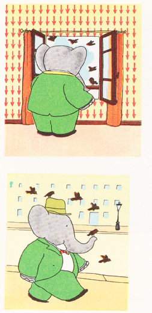
「あなたさまは いきている サンタの おじさんを おさがしだとか。 わたくしども そのかたと それなりの あいだがらですから、 おひきあわせ いたしますよ。」
と げんきよく とびたちまして。 ババールに みちあんないしつつ、 おおきな はしで かわを こえて、 そこで いうのです。
「つきました。 いつも ここで おみかけします。 ふだんは あのかた はしのしたで ねとまりを。」
「ん？ なにか おかしいぞ。」と ババールが あやしんでいると、 ことりたちが そろって ちゅんちゅん。
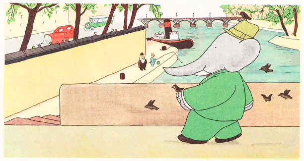
「ほら、 あのかたですよ。 あそこ、 つりびとの おとなりに いらっしゃる。」
というわけで ババールは はとばに おりて、 おじいさんの おかおを ちらりと みて おっかな びっくり、 ごあいさつしてから たずねます。
「ごめんください、 あなたが まさか ほんものの サンタさんで いらっしゃいますか。 こどもたちに おもちゃを くばるという あの。」
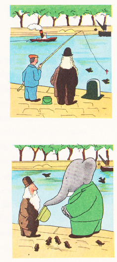
ところが おじいさんの へんじは こうです。
「すまんな、 ひとちがいよ。 わしの なは ラザロ・カンペオッチ。 プロの モデルじゃ。 つまりは えかきの ともだちが、 わしに サンタの おじさんという あだなを つけおってな。 いまでは そのなで とおっておるわけなんじゃ。」
がっくり。 そこでまた ババールが かわぎしの とおりを とぼとぼ あるきながら かんがえなおしていると。
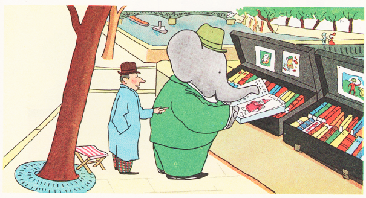
なんと ふるほんやの みせさきの おおきな ほんが めに はいりまして。 サンタの おじさんが えがかれています。 すぐさま かいまして、 じぶんの へやで あらためてみました。 けれども あいにく さっぱり わからない ことばで かかれてありまして。 こまってしまって、 ホテルの しはいにんに そうだんしてみると、 ありがたいことに じぶんの むすこが かよっている がっこうの せんせいの おうちを おしえてくれまして。
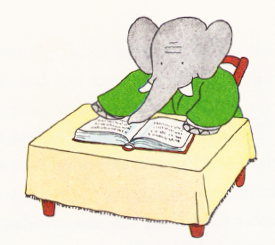
「きっと ジーリャネさんなら あなたの ごほん ほんやくしてくださいますよ。」
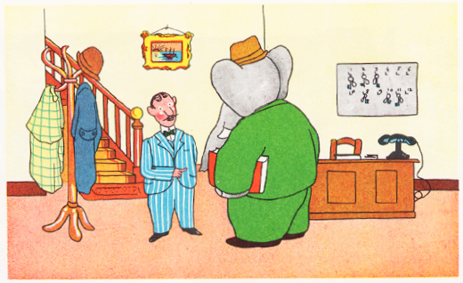
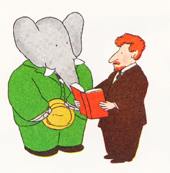
さっそく ババールは ジーリャネせんせいの うちの ベルを ならします。 すぐに なかへ いれてもらえたのですが、 ほんを ちらりと みせるなり、 たいへん もうしわけないが じぶんには よめないと いわれまして。 こんどは ウィリアム・ジョーンズという ゆうめいな はかせの おうちの ごしょうかい。 それから １じかんと あいだを おかず、 ババールが そのひとの しごとばを うかがうと、 こんどは そのはかせ ほんを じっくりと あらためて うんうん うなったりして。 えんえん ババールは またされたあげく、 こんなふうに いわれます。
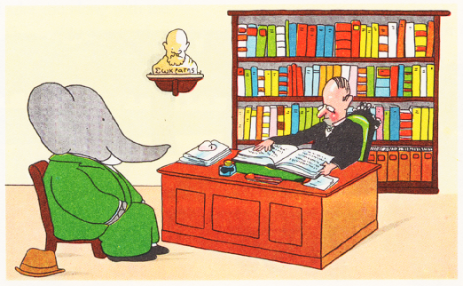
「あなたの ごほん、 よみとくのが たいへん むつかしい。 これは ふるい ゴシックもじで かかれてある。 ここには サンタの おじさんのことが くわしく のっていて、 そのすまいは ドコカオクソコという ちいさな まちの ほどちかくと なっておる。 とりあえず いまのところ ちゃんと いえるのは これだけだ。」
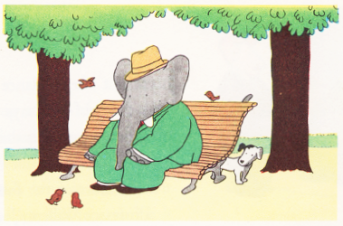
ひとまず ババールは こうえんの ベンチで また かんがえごと。 すると さっきの ことりたちが こちらに きづいて、 サンタさんは みつかったか ききにきましたので ババールも こたえます。
「ううむ、 まだでね。 やっと わかったのが、 すまいが ここから とおい ドコカオクソコという まちの そばだと いうことだけで。 それにしたって さがすのは ずいぶん たいへんだぞ！」
すると そのときです、 こいぬが ちかづいてきて こえを かけてきまして。
「ごめんください、 わたくし だいの とくいですぞ。 なにかを さがすのは。 なにせ ものすごく はなが ききますからな。 あそこを あるいている おじょうちゃんの にんぎょうを かぐだけで、 あなたを ちゃんと ごあんないして さしあげます。 あれを あげたのが サンタの おじさんなのですから。 ぜひとも あなたの おともを させてください。 いまや すていぬの わたくしを ぜひに。」
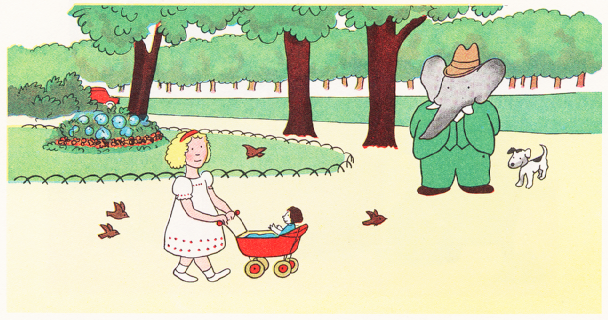
そのことばを きいた ババール、 めを こいぬに むけて ひとこと。
「なるほど、 では つれていこう。」
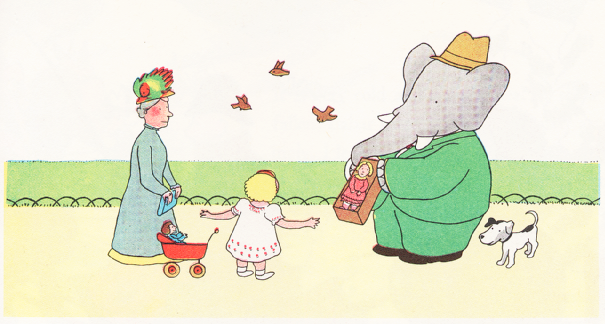
あとは いそいで かってきた さらの おたかい おにんぎょうを、 ヴィルジニーちゃんに みせると よろこんで じぶんのものと とりかえてくれまして。 さて ババールは サンタの にんぎょうを いぬに かがせて、 ごほうびに あまいものを あげます。
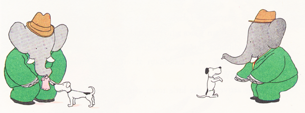
たびだつまえ ババールが また ものしりはかせの ウィリアム・ジョーンズに あいにいくと、 ほんを かえしてくれて さらに もうすこし くわしく おしえてくれました。 まちから ２０キロほど はなれた やまのうえ もりのなかに サンタさんが すんでいるとか。 ながい みちのりを こえて、 ババールは はるばる ちいさな まち ドコカオクソコに たどりつきます。

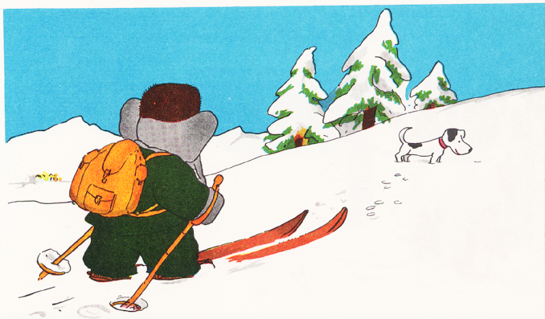
そこは さむく、 ものすごい ゆきでした。 ですので ババールも そなえて スキーいたを てにいれ そりを てはいします。 やまの ふもとまでは そりで すべってゆけるのですが、 そこで いったん おりなければなりません。 そこからは いたを あしに はめ、 ずっしり かばんを せに、 デュック（と なづけた こいぬ）を つれて ふしぎの もりを のぼってゆくのです。 やるき まんまん デュックも きゃんきゃんと ほえながら じっくり あたりを さぐります。 と ふいに たちどまって しっぽを たて、 はなを ならしまして。 ついに サンタさんの においを かぎつけたのです。
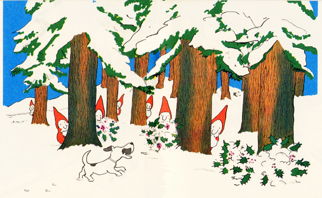
たちまち デュックは そのさきへ むかいはじめます。 「とらえた、 つかんだ、 このにおいだ！」と わんわん おおきく ほえるので、 もりじゅうに ひびきまして。 ところが そのとき だれも いない このもりで なにが うごいたと おもいます？ なんと きの うしろに やまの こびとさんが かくれていたのです。 デュックは ちかよって たしかめようと おもったのですが、 こっちへ むかって かためた ゆきだまを ちからいっぱい なげつけてきます。 そいつを あたまに わきばらに くらってしまいまして。
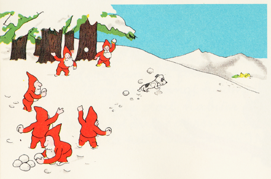
ほとんど いきも できず めも みえなくって、 しっぽも だらんと とにかく ひきかえすことにします。 もう ぜえはあ とぼとぼ。 もどってくるのを みて ババールは たちどまり わけを たずねます。
「おやおや！ デュック、 いったい なにごとだい？」
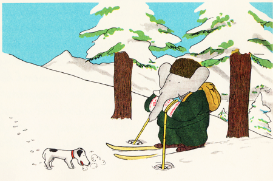
ですので デュックは ひげを はやした こびとたちとの できごとを はなしまして。 ババールの へんじは こうです。
「そうだったのか！ だが なんとしても さきへ すすまねばなるまい。 ここは ぜひとも そのこびとたちと おちかづきに なりたいぞ。 そやつらの もとへ つれってってくれ。」
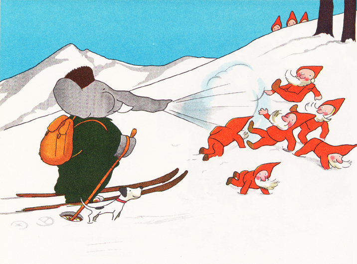
そのあと すこしして こんどは ババールが こびとたちと はちあわせ。 あっちは こっちを こわがらせようと、 おそれず つっこんできて たまを なげてくるのですが、 ババールは へっちゃらと ばかりに はないきを ふきかけまして。 たちまち ぜんいん ひっくりかえって おりかさなって、 おきあがるや かけあしで にげだして おともなく きえてしまいます。
ババールは どっと わらって、 また においを かぎつけた デュックのうしろから やまを のぼっていきます。
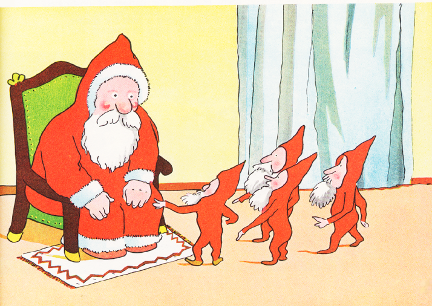
こびとたちの むかったさきは サンタさんの まえ。 そこで まくしたてたのが、 ながい はなを もつ おおきな いきもののことに、 そいつに すごい いきおいで はないきを かけられ すってんころりん おいはらわれたこと。 サンタの おじさんは はなしに ききいります。 さらに こびとたちに よれば、 そのおおきな いきものに けちらされたところは ここから ほんのすぐそば、 ぶさいくな いぬころの あんないで まっすぐ このサンタの ひみつきちに むかっているとのこと。
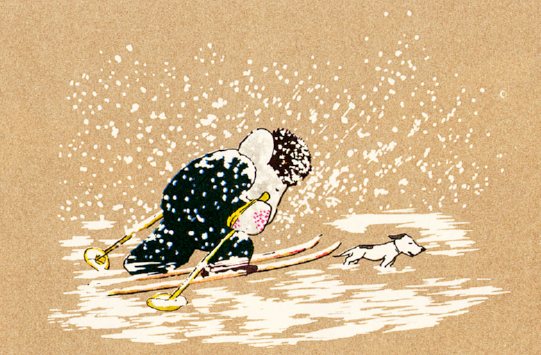
そのとおり どんどん せまってゆく ババールでしたが、 かたや ふぶきも これでもかと ひどくなっていきます。 あまりに かぜが つよいので、 ゆきも めや はだに つきささるみたいで。 もう なんにも まえが みえません。 ババールも ひっしで おいかぜに たちむかいますが、 もはや むりに あるくのも あぶないので あなを ほって しのぐことにします。
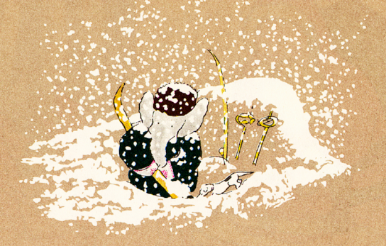
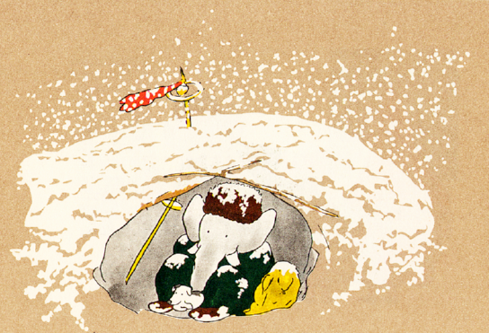
そこで ストックと スキーいた、 あと ゆきの かたまりで やねを つくります。 というわけで しばし ゆきやどり。
「なんと さむい。 じまんの はなも こおりそうだぞ！」
そう ババールの おもうそばで、 デュックも もう へとへと。 そのときです。 ババールの あしもとから じめんが くずれて、 あっというまに デュックもろとも どこへやら！
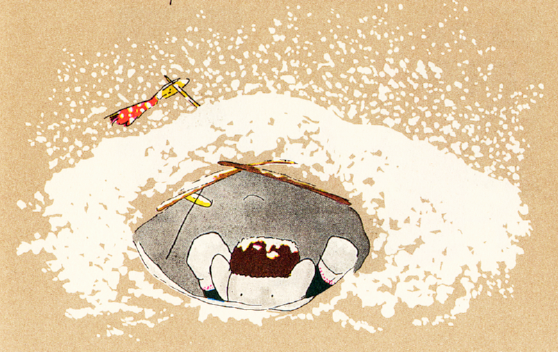
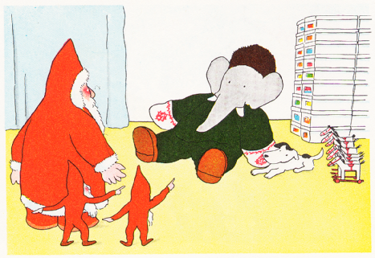
なんと しらずしらず くうきあなの えんとつを ぬけて、 サンタさんの すみかに おちていたのです！ ババールも おもわず おおごえを あげまして。
「サンタの おじさん！ デュック、 わたしたちは ついたんだ！」
すると つかれも さむさも、 うれしささえも ふっとんで、 ばったり きを うしなってしまいまして。 サンタの おじさんが いいます。
「いそげ、 やまの こびとたち。 いざこざは ひとまず わすれて、 とにかく このひとの ふくを ぬがせて からだを あたためるんじゃ。」
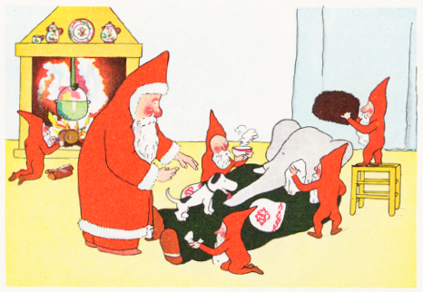
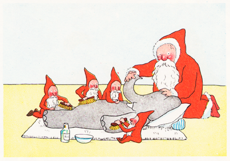
たちまち みんなは おおあわて。 ふくを ぬがせて、 アルコールで ひととおり マッサージしてから おおきな ブラシで きつく ごしごし。 おくすりがかりの こびとも きつけぐすりを のませます。 なんとか たちなおった ババールは、 おきもち かたじけないと ことわってから、 サンタさんと おいしい スープを ごいっしょします。
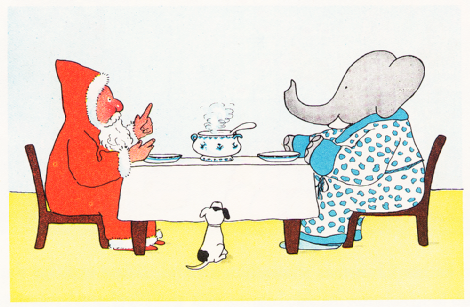
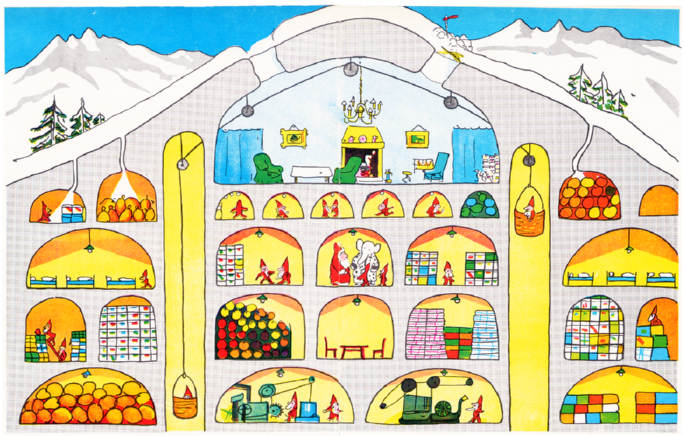
サンタさんの おたくを あんないされているあいだ、 ババールは とにかく ひっきりなしに わけを はなします。 はるばる やってきたのは、 おねがいを するためだと。 にんげんの こどもと おなじように、 ぞうの くににも いらして、 うちの こどもたちにも おもちゃを くばってほしいのだと。 サンタの おじさんは このおねがいに こころ うたれたのですが ……
※あんないで わかったこと： おおきな おへやが、 ふだん サンタさんの いるところで、 みぎうえに みえる あなから ババールは ここへ おっこちてきた。 それから おもちゃの おへやが たくさんある。 おにんぎょうの おへや、 ロボットの おへや、 なりきりグッズの おへや、 れっしゃの おへや、 くみたてブロックの おへや、 ぬいぐるみの おへや、 スポーツようひんの おへや などなど ……（どれも きっちり ふくろに はいっています） あとは こびとたちの ねどこに、 エレベーター、 マシンルーム。
ババールに ことわります。 クリスマスイヴの よるは もう いそがしすぎて くたくたで、 どうしても ぞうの くにには いけないのだと。 さらに ことばを つづけまして。「せかいの こどもたちに おもちゃを くばる。 その いつもの しごとでさえも きょねんは いっぱいいっぱいでな。」
そこで ババールは いいます。
「これは これは。 サンタの おじさん、 よく わかりました。 でしたら むしろ それまで このひみつきちから はなれて、 そとの くうきを すって、 しっかり おやすみしては いかがでしょう。 いますぐにでも ぞうの くにへ まいりましょう。 ひなたぼっこするのです。 たっぷり やすめば クリスマスには げんきいっぱいですぞ。」
このもうしでに そそられて、 サンタの おじさんは こびとたちに ちゃんと るすばんしてるよう いいつけます。 そうして ババールと デュックを つれて、 そらとぶマシン ＰＮ１ごうへ のりこみ しゅっぱつです。
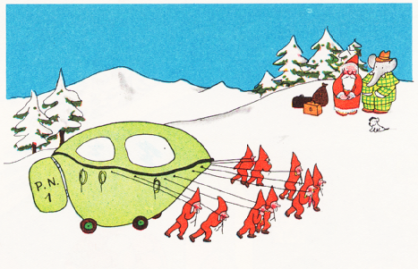
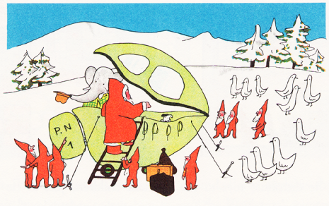
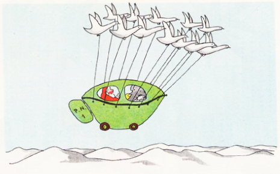
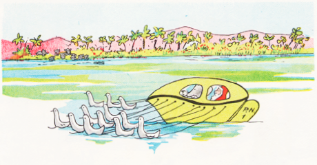
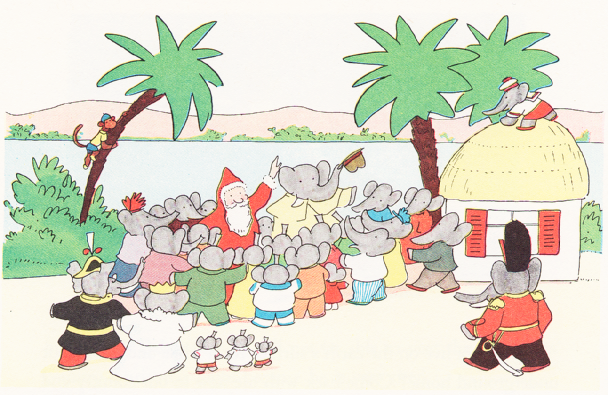
とうちゃく。 サンタの おじさんが けしきに みとれていると、 ぞうという ぞうが かんげいしようと あちこちから あつまってきます。 ポム、 フロール、 アレクサンドルも おおはしゃぎ。 よく みえるよう アルチュールは おうちの やねへ、 ゼフィルは きのうえへ のぼっています。 さわぎが ひとだんらくすると、 おきさきの セレストが サンタの おじさんに ３にんの こどもと アルチュール、 ゼフィルを ひきあわせまして。
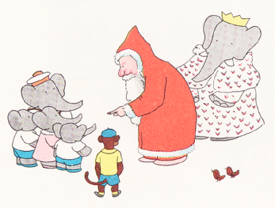
「おお てがみの ぬしは きみたちか。 あえて うれしい。 すばらしい クリスマスを やくそくしよう。」と サンタさんは いいます。
くりかえし サンタさんは シマウマで さんぽに でかけるので、 ババールは それに じてんしゃで ごいっしょしまして。 それだけでなく サンタさんは まいにち ２じかん たのしく ひなたぼっこ、 これは カプロッスせんせいの おすすめです。 ハンモックに ねころがっていると、 ときどき ポムに フロール あとアレクサンドルが のぞきにくるのですが しずかにして けして じゃまは しません。
サンタの おじさんは あるひ ババールに いいます。

「わがともよ、 いろいろ してくれて ありがとう。 もうすぐ クリスマスだ。 もう いかねばならん。 まっとる にんげんの こどもたちに おもちゃを くばらんと。 とはいえ、 こぞうさんらと した やくそくも わすれとらんぞ。 このふくろに なにが はいっとると おもう？ ほんものの サンタふくだ、 おまえさんサイズのな！ そらも とべるように なる まほうの ふくに、 いつでも おもちゃ いっぱいの かご。 あんたさんは クリスマスイヴの よる、 ぞうの くにで わしの かわりを するんじゃ。 わしも やることが おわったら きっと もどってきて、 あんたさんの こどもらに ええ クリスマスツリーを とどけてやるぞい。」
クリスマスイヴの よる、 ババールは サンタさんに いわれたとおりに します。 ふくと ひげを みにつけると、 たちまち からだが かるくなって、 とべるように なったのが わかります。
「ほんとうに おどろいた。 これなら おもちゃも ぜんぶ くばりきれる。」
よるが あけるまでに おわらせようと おおわらわ。 そうして クリスマスの あさ。 どのおうちでも めを さました こぞうは みんな おおよろこびで！ おしろでも おきさきの セレストが それぞれの おへやを ちらっと のぞくと、 ポムは くつしたを さかさに、 フロールは おにんぎょうを あやし、 アレクサンドルは ベッドで とびはねながら おおごえ。「とっても すてきな クリスマス！ クリスマスぅ！」
アルチュール、 ゼフィル、 ポム、 フロール、 アレクサンドル …… みんな、 こんなに きらきら かがやく それこそ うつくしい もみのきを、 うまれて はじめて めに しました。
サンタの おじさんが やくそくどおりに もどってきて、 このすてきな もみのきを とどけてくれたのです。 おかげさまで かぞくの だんらんも とっても うまく いきました。
あくるひには、 サンタの おじさんも また マシンで とびたって、 じぶんの ひみつきちへ こびとさんのところへ もどります。 おおきな みずうみの ほとりで、 ババールと セレスト、 アルチュールに ゼフィル あと ３にんの こどもたちが そろって ハンカチを ふります。 ともだちに なった サンタさんが かえっていくのは ちょっと さみしいけれど、 うれしいことに まいとし ぞうの くにへ おやすみにくると やくそくしてくれましたとさ。
 re No
re No l"
l"